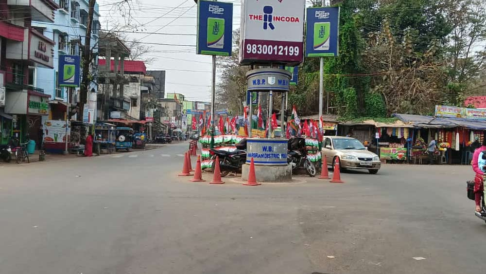
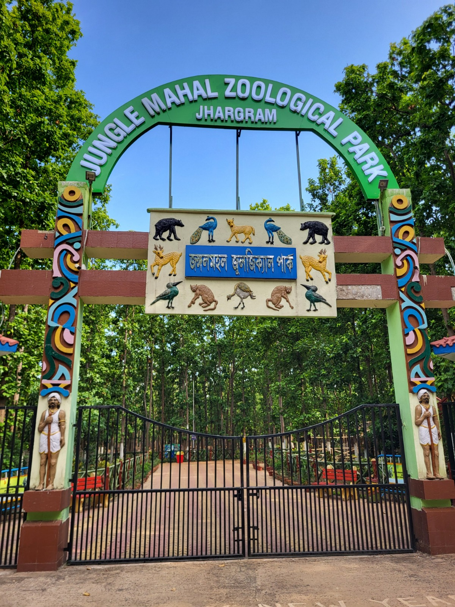

ঝাড়গ্রাম রাজবাড়ি
ঝাড়গ্রামের প্রধান আকর্ষণ হলো এখানকার রাজবাড়ি। এই ঐতিহাসিক প্রাসাদের স্থাপত্য এবং বাগান দেখার মতো। বর্তমানে এর কিছু অংশ হেরিটেজ হোটেল হিসেবে ব্যবহৃত হয়।

পশ্চিমবঙ্গের এক অনন্য পর্যটন কেন্দ্র হলো ঝাড়গ্রাম। একে অরণ্যসুন্দরী বলা হয় কারণ এর চারিদিকে রয়েছে ঘন শাল ও পিয়ালের জঙ্গল।
ঝাড়গ্রামের প্রধান আকর্ষণ হলো এখানকার রাজবাড়ি। এই ঐতিহাসিক প্রাসাদের স্থাপত্য এবং বাগান দেখার মতো। বর্তমানে এর কিছু অংশ হেরিটেজ হোটেল হিসেবে ব্যবহৃত হয়।
ঝাড়গ্রামের 'জঙ্গলমহল জুলজিক্যাল পার্ক' বা চিড়িয়াখানা পশুপাখি প্রেমীদের জন্য এক স্বর্গ। এছাড়া চিল্কিগড় কনকদুর্গা মন্দির ও দুলুং নদী এখানকার অন্যতম সম্পদ।
ঝাড়গ্রামের আদিবাসী নৃত্য ও লোকগান সারা বিশ্বে পরিচিত। এখানকার শালপাতা দিয়ে তৈরি হস্তশিল্প এবং জঙ্গলমহলের উৎসব পর্যটকদের মুগ্ধ করে।
"ঝাড়গ্রাম সত্যি এক "অরণ্যসুন্দরী"। পশ্চিমবঙ্গের দক্ষিণ-পশ্চিমের এই জেলাটি প্রকৃতি এবং ইতিহাসের এমন এক মিশ্রণ যা যেকোনো পর্যটককে মুগ্ধ করবে। ঝাড়গ্রামের সৌন্দর্য নিয়ে আমার কিছু ব্যক্তিগত মতামত নিচে দেওয়া হলো:
১. অরণ্যের মায়াবী নিস্তব্ধতা ঝাড়গ্রামের সবচেয়ে বড় সম্পদ হলো এর মাইলের পর মাইল বিস্তৃত শাল, পিয়াল আর মহুল বন। পিচঢালা রাস্তার দুপাশে যখন ঘন জঙ্গল দেখা যায়, সেই দৃশ্যটি অতুলনীয়। বিশেষ করে বর্ষাকালে যখন এই অরণ্য সজীব হয়ে ওঠে, তখন এর রূপ কয়েক গুণ বেড়ে যায়।
২. ইতিহাসের রাজকীয় ছোঁয়া ঝাড়গ্রাম রাজবাড়ি শুধু একটি স্থাপত্য নয়, এটি এই অঞ্চলের ঐতিহ্যের প্রতীক। এই প্রাসাদের ইসলামিক এবং গথিক স্থাপত্যশৈলী এবং এর বিশাল বাগান আপনাকে রাজকীয় আমেজ দেবে। আপনি যেহেতু আপনার কোডিং প্রজেক্টে এই রাজবাড়িকে রেখেছেন, এটি আপনার ওয়েবসাইটের গুরুত্ব অনেক বাড়িয়ে দেবে।
৩. আধ্যাত্মিকতা ও শান্ত পরিবেশ চিল্কিগড়ের কনকদুর্গা মন্দির দুলুং নদীর তীরে অবস্থিত এবং এর চারপাশ গভীর জঙ্গলে ঘেরা। এই জায়গাটির শান্ত পরিবেশ এবং মন্দিরের প্রাচীন স্থাপত্য মনের শান্তি দেয়। প্রকৃতির সাথে আধ্যাত্মিকতার এমন মিলন খুব কম জায়গাতেই দেখা যায়।
৪. আদিবাসী সংস্কৃতির প্রাণের স্পন্দন ঝাড়গ্রামের সৌন্দর্য শুধু এর প্রকৃতিতে নয়, এর মানুষের মধ্যেও রয়েছে। এখানকার সাঁওতালি নৃত্য, মাদলের শব্দ এবং আদিবাসী হস্তশিল্প (যেমন আপনি শালপাতার কাজের ছবি দিয়েছেন) পর্যটকদের এক মাটির কাছাকাছি অভিজ্ঞতার সুযোগ করে দেয়।"
ঝাড়গ্রাম ভ্রমণে সহায়তার জন্য বা কোনো তথ্যের জন্য আমাদের ইমেইল করতে পারেন।
📧 E-Mail: dasg79209@gmail.com
📞 Contact: +91 8927294076